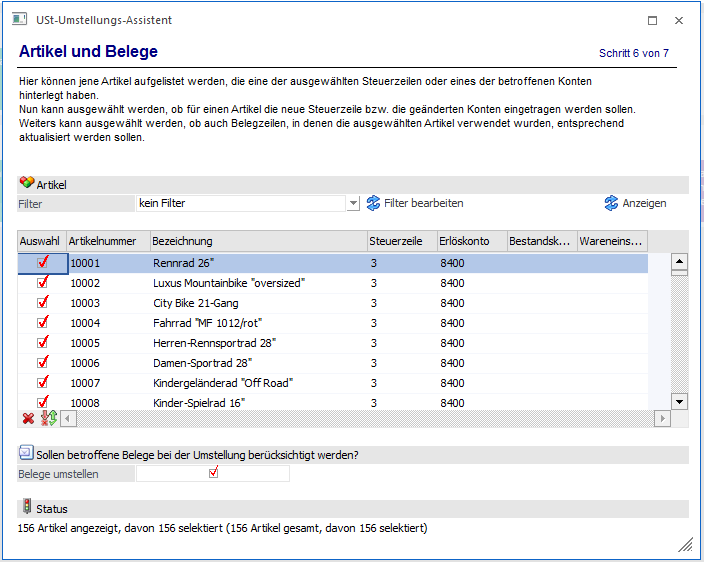
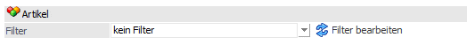
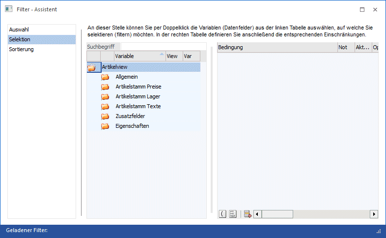
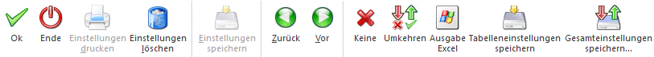

In dieser Tabelle werden über den Anzeigen-Button die Artikel aufgelistet, die eine der ausgewählten Steuerzeilen oder eines der betroffenen Konten hinterlegt haben.
Es kann ausgewählt werden, ob für einen Artikel die neue Steuerzeile bzw. die geänderten Konten eingetragen werden sollen.
Über die Checkbox "Belege" welche im Standard gesetzt ist können die Belege umgestellt werden. Beim Ausführen des Assistenten unter Berücksichtigung, dass die Belege nicht umgestellt werden sollen, muss die Umstellung der Belege selbst vorgenommen werden. Über ein manuelles Bearbeiten der Belge und/oder der Belegumstellung.
Hinweis:
Belegzeilen, in denen die ausgewählten Artikel verwendet wurden, werden entsprechend aktualisiert.
Es werden alle offenen FAKT-Belege (nicht gerechnete/gedruckte Belege, Autobelege, Angebote, Aufträge, Kontrakte) umgestellt.
Belege mit dem Druckstatus *NNN (abgeschlossenen Angebote) und **NN (abgeschlossene Aufträge) werden ebenfalls mit umgestellt.
Hinweis:
In der Belegerfassung beim Verwenden des Typs "6 - GUTSCHRIFT" in der Belegmitte muss nach der Umstellung die Steuerzeile / Konto (Erlös / Aufwand) manuell umgestellt werden. Diese Belegzeilen werden bei der Umstellung nicht berücksichtigt
Status
Unterhalb der Tabelle existiert eine Statuszeile, welche die Eingaben des aktuellen Schrittes zusammenfasst.
Filter
Über einen Filter, in dem der Artikelstamm zur Verfügung steht, können die Artikel für die Umstellung eingeschränkt werden.


Buttons

Ø Ok
Über den Button Ok" gelangt man sofort in den letzten Schritt des Assistenten.
Ø Ende
Durch Drücken des Buttons "Ende" bzw. der Taste ESC wird das Fenster geschlossen.
Ø Einstellungen löschen
Über den Button "Einstellungen löschen" werden gespeicherte Einstellungen gelöscht.
Ø Zurück
Durch Anwahl des Buttons "Zurück" kann in den vorherigen Schritt des Assistenten gewechselt werden.
Ø Vor
Durch Anwahl des Buttons "Vor" kann in den nächsten Schritt des Assistenten gewechselt werden.
Ø Keine
Über diesen Button wird die Auswahl in allen Zeilen zurückgesetzt, so dass kein Artikel zur Auswahl angehakt ist.
Ø Umkehren
Über diesen Button wird die zuvor getroffene Auswahl umgekehrt.
Ø Ausgabe Excel
Durch Anwahl des Buttons "Ausgabe Excel" wird der Inhalt der Tabelle an Microsoft Excel übergeben.
Ø Tabelleneinstellungen speichern
Die Spalten einer Tabelle können grundsätzlich an beliebige Positionen verschoben, bzw. in der Breite entsprechend angepasst werden. Durch Anwahl des Buttons "Tabelleneinstellungen speichern" werden die Einstellungen benutzerspezifisch gespeichert und bei dem nächsten Aufruf des Programmpunktes wieder vorgeschlagen.
Ø Gesamteinstellungen speichern
Im Gegensatz zu "Tabelleneinstellungen speichern" können mit "Gesamteinstellungen speichern" mehrere Tabellenaufbauten gespeichert und nach Wunsch geladen werden. Zusätzlich werden Sonderfunktionen der Tabelle (z.B. "Spalte gruppieren") ebenfalls bei der Speicherung bedacht.